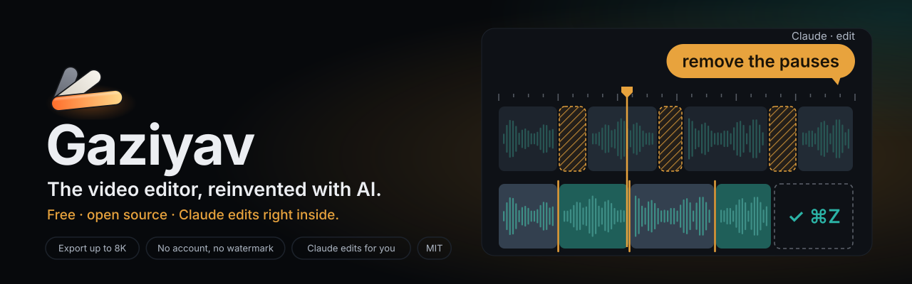

A free video editor for Reels, TikToks and Shorts
Open source, an alternative to CapCut. Try it right here: nothing to install, no account.
Open the editor Download for macOS The tour →
Your files stay in this browser. Only lipsync, AI image and AI video, when you run them on your own key, send what they need to fal.ai.

One set of rules for every clip
Cut, trim, ripple, snap and undo work the same on every clip. Titles, transitions, effects, 311 music tracks and 2,514 sounds, looks, frame-exact export.
Claude edits inside Gaziyav
In the Mac app, a chat with Claude sits beside your timeline. Claude edits the open project with the editor's own tools; every step appears on your timeline, and ⌘Z undoes it. Your own Claude subscription through Claude Code: no credits, no API key.
No account, no watermark
Open source. Projects stay in this browser or in a file on your disk. After the first open, the editor works offline.
The Mac app
Everything above, plus the Claude chat with skills you switch on and off, posting to Shorts, TikTok and Reels from one message, Settings → Services with keyless picture and video search, about 2,300 more voices on your own keys, 1,515 music tracks and 7,765 sound effects, a clip by link and more on-device AI. For Apple silicon Macs with macOS 14 or later. One download: the same full build the author edits with.
To connect Claude: install Claude Code from claude.com/download and sign in, then press Connect in the chat.
On Windows, Linux or any other computer, use it right here in your browser.
Also in the browser
- On your own fal.ai key (beta): lipsync (type a new line and the same face says it), AI image and AI video. The price shows before every run. Lipsync is cheaper in the Mac app, because it sends only the speech.
- Install it from the browser's menu to open it like an app. It works offline.
Which browser
- Best in Chrome or Edge: they encode video in the page and write exports straight to disk, any length.
- Safari and Firefox: the page says up front what this browser can't do and what still works.
- Captions from speech run in the page. The Claude chat, a voice from text, a clip by link and posting are only in the Mac app.